Contents
Hermes Agent 101 · Student manual
Your AI agent, from zero to working
Everything you need to set up a Hermes agent, use it well, make your own, and keep it safe. Follow it from top to bottom the first time. After that, use it as a reference.
Part 0
Read this first
This manual shows two ways to do almost everything:
- Hermes Desktopthe app. You click instead of type. Start here if you’re new.
- Terminalcommands you type. Same result, and you see what happens under the hood.
Pick one and stick with it. Both change the same settings, so you can switch later.
Follow along and read. Install Hermes on your own computer at home. If a computer isn’t yours (school, family, work), ask the owner first.
- Never share an API key or bot token. Not in a chat, a screenshot, a group message, or on GitHub. Treat it like a password.
- Don’t type personal data (yours or anyone else’s) into an agent you’re testing.
- Check what an agent tells you. It can be wrong and still sound sure.
Signs in this manual
Part 1
What is Hermes Agent?
Hermes Agent is a free, open-source AI agent made by Nous Research. It runs on your own computer, remembers what it learns, and can work for you on a schedule.
Chatbot vs. agent
A chatbot only talks. An agent can also act: search the web, read a file, run a job at 8 AM, send you a Telegram message. It does this with tools.
Every agent works in a loop. It repeats these steps until the job is done:
The parts of a Hermes agent
Your chats, memory, and skills are saved on your computer in a folder called ~/.hermes. Messages go only to the model provider you choose. Hermes itself doesn’t collect usage data.

Part 2
Requirements
Check these before you install. Most students only need a laptop, the internet, and one free account.
Your computer
| Your computer | Hermes Desktop (the app) | Terminal install |
|---|---|---|
| Mac with Apple Silicon (M1 or newer) | ✓ Download the app | ✓ Terminal |
| Mac with an Intel chip | ✗ The installer says “not supported on this Mac” | Not officially supported. The terminal install may still work. |
| Windows 11 (version 22H2 or newer) | ✓ Download the app | ✓ PowerShell |
| Windows 10 | ✗ The app needs Windows 11 22H2 | ✓ PowerShell, or WSL2 |
| Linux (Ubuntu and similar) | ✗ No app package yet | ✓ Terminal |
| Android phone | ✗ | Advanced: Termux, on 64-bit ARM phones only. Best effort. |
| Chromebook, iPhone, iPad | ✗ | ✗ Not supported. Use Telegram to talk to an agent that runs elsewhere. |
Not sure what you have? Mac: Apple menu › About This Mac (“Chip: Apple M…” means Apple Silicon). Windows: Settings › System › About (look at “Version”).
Everything else
| What | Why you need it | Notes |
|---|---|---|
| Free disk space | Hermes, its Python, and its tools | Plan for about 4 GB. Our full install used about 4 GB. |
| Internet | To install, and to reach a cloud model | A local model can work offline after setup. |
| An AI model | The agent’s brain | Pick one in Part 4: Nous Portal, an API key (like OpenRouter), or a local model. |
| Admin rights | To install apps | On a school or shared computer, ask first. |
| Telegram (optional) | To chat with your agent from your phone | Only for Part 12. |
| Skills | None for the app | For the terminal: you can copy, paste, and press Enter. |
What does it cost?
Hermes is free (open source, MIT license). You only pay the model provider, and you can start for free:
- Nous Portal has a free tier that needs no API key.
- OpenRouter has some free models (with daily limits).
- A local model is free but needs a strong computer.
If you add money to a provider, set a spending limit on its website. An agent that loops can use credits fast. Part 9 shows the setting that stops loops.
Before you start: checklist
Part 3
Install Hermes
Choose A (the app) or B (the terminal). It takes about 5 to 15 minutes, once.
Hermes DesktopA. Install the app
- Go to hermes-agent.nousresearch.com/desktop and download the app for your computer.
- Mac: open the downloaded file and drag Hermes.app into Applications. Then open it from Applications.
Windows: open the downloaded.appinstallerfile and click Install. - On the first screen, choose Install Hermes locally. (“Connect to existing Hermes” is only if Hermes already runs on another computer.)
- Wait for the one-time setup. It shows its progress step by step. Don’t close the app.
- Connect a model (next part), then click Begin.
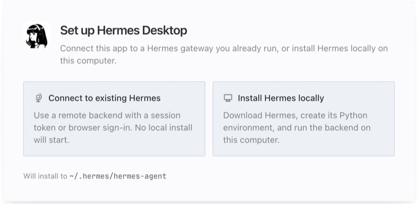
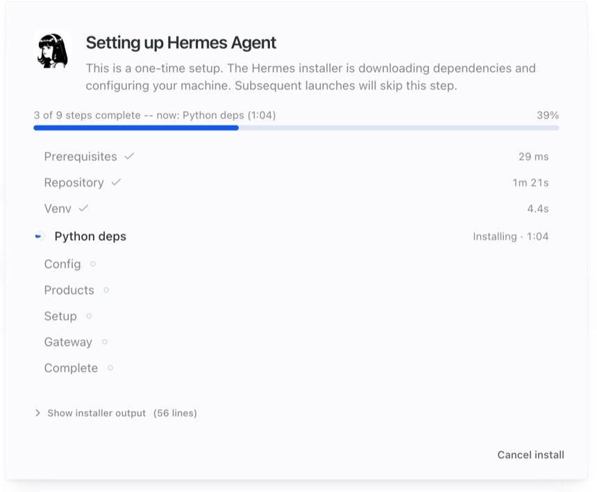
Run hermes desktop. It opens the app with the same settings, keys, and chats.
TerminalB. Install with one command
Open the terminal for your computer, paste the command, and press Enter.
curl -fsSL https://hermes-agent.nousresearch.com/install.sh | bash
iex (irm https://hermes-agent.nousresearch.com/install.ps1)
When it finishes, close the terminal and open a new one. Then run the setup wizard and the health check:
hermes setup # the setup wizard: model, keys, tools hermes doctor # checks that everything works hermes --version # shows the version you installed

hermes --version: Hermes is installed.
hermes doctor: green ✓ means OK. ⚠ items are optional.Open a new terminal window. Still there? See Troubleshooting.
You’re done when
Part 4
Connect a model
Hermes needs an AI model to think. Choose one of these. You can change it any time.
| Option | Good for | You need |
|---|---|---|
| Nous Portal | The easiest start. One login covers the model and web search. | A free Nous Portal account |
| An API key (OpenRouter, OpenAI, Gemini, and more) | Choosing from many models. OpenRouter has some free ones. | An account and a key from that provider |
| A local model (like Ollama) | Privacy and offline use. Nothing leaves your computer. | A strong computer, and the model installed |
Hermes DesktopIn the app
- On the “Let’s get you setup” screen, click Nous Portal and sign in. Or click I have an API key.
- For a key: pick the provider (for example OpenRouter), click Get a key, create a key on their website, paste it, then click Connect.
- When it says Connected, click Change if you want another model, then Begin.
- Later, change the model in Settings › Model.
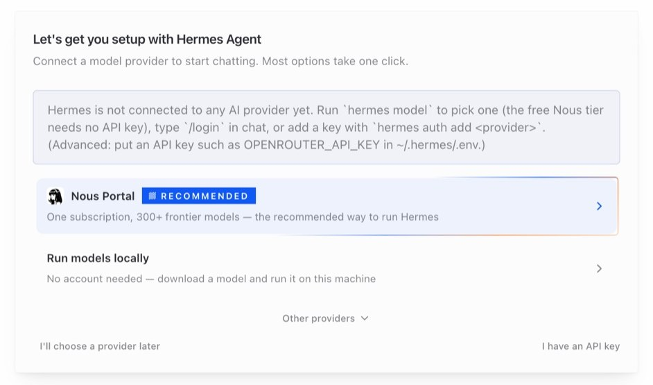
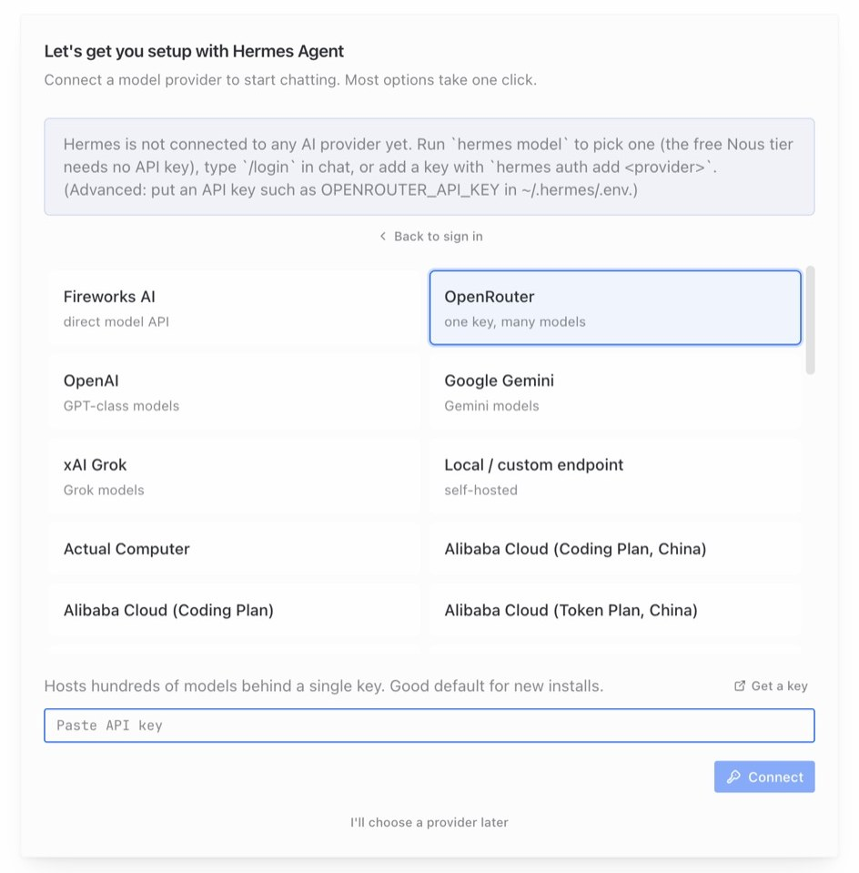
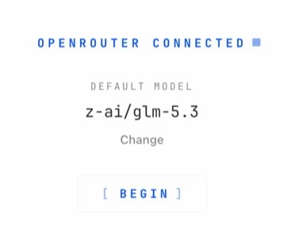
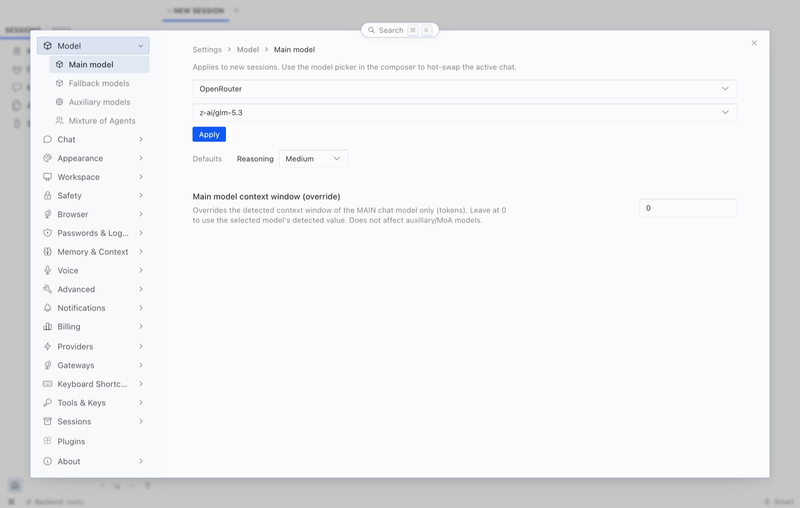
TerminalIn the terminal
hermes setup --portal # sign in to Nous Portal hermes model # pick a provider and model from a menu
Using a local model (Ollama)
Run hermes model, choose Custom endpoint, and enter:
API base URL: http://localhost:11434/v1
API key: ollama
Model name: (the model you pulled in Ollama)In ~/.hermes/.env on your computer. Never paste a key into a chat with the agent, and never screenshot this file.
Part 5
Use your agent
Talking to an agent is like giving a task to a helper who is fast, but new. Clear tasks get good results.
Hermes DesktopYour first chat
- Type in the message box in the middle and press Enter. Try: “Hi! What can you do for a student?”
- Watch it work. When it uses a tool (like web search), you see that step in the chat.
- If it asks for approval before running something, read what it wants to do. Click approve only if you understand it.
- Start a fresh chat for a new task: New session, or Ctrl/⌘ + N.
Ctrl/⌘ + K opens the command palette: jump to any page or setting by typing its name.
TerminalChat in the terminal
hermes # start a chat (Ctrl+C or /quit to leave) hermes --continue # pick up your last chat hermes -p study-buddy # chat with one of your agents (Part 6) hermes -z "Explain recursion in two sentences" # one question, one answer

-z.-zOne-shot mode skips approval prompts. Use it only with agents that have safe tools (no terminal or file tools).
Commands you can type in a chat
Start a message with / to give Hermes a command instead of a task. These work in the terminal, and most of them in the app too.
| Command | What it does |
|---|---|
/help | List the commands |
/new | Start a fresh chat. Do this when you finish a task: it’s also when memory is saved. |
/retry | Ask again for a new answer to your last message |
/undo | Take back your last message and try a better one |
/model | Switch the model for this chat |
/tools | See or change which tools are on |
/approve · /deny | Answer a request to run a risky command |
/status | Which model, how much of the chat’s memory is used |
/compress | Shrink a long chat so it fits again |
/usage | How many tokens you used, and your limits |
/quit | Leave the terminal chat |
How to ask well
| Instead of | Try | Why |
|---|---|---|
| “Help me study” | “I have a Data Structures exam on Friday about trees and graphs. Make a 4-day plan, 1 hour a day.” | Say the goal, the details, and the limits. |
| “What’s new in AI?” | “Find 3 AI news stories from this week. One line each, with the source link.” | Ask for a format and for sources. |
| “Fix my code” | “This Python gives IndexError on line 12. Give me a hint first, not the answer.” (then paste the code) | Share the error, and say how much help you want. |
| Five tasks in one message | One task, check it, then the next | Small steps are easier to check. |
When the answer is wrong
- Say exactly what’s wrong: “The second link doesn’t mention this. Find a better source.”
- Use
/retryfor a new answer, or/undoto rewrite your message. - Open the sources it gives you. Does the page really say that?
- For facts that matter (grades, health, money), check with a person or an official source.
Part 6
Make your own agent
Each agent you make is a profile: its own job, settings, memory, and keys. One profile, one job. A study buddy and a news scout should be two profiles.
Hermes DesktopIn the app
- In the left sidebar, switch from Sessions to Bots. Every profile is a bot in this list.
- Create a new agent. Give it a Name, a Title, and a short Description of its job.
- Open Advanced to set its model, SOUL.md, skills, and toolsets. (Parts 7 and 8 explain these.)
- Open its Bot Chat and say hi.
When you have two or more profiles, settings pages show an Applies to row at the top. Check it before you change anything, so you edit the right agent.
TerminalIn the terminal
hermes profile create study-buddy # a new, empty agent hermes profile create study-buddy --clone # or copy your current settings and keys hermes -p study-buddy model # give it its own model hermes -p study-buddy # chat with it hermes profile list # see all your agents
Profile names use lowercase letters, numbers, and dashes. Put -p <name> after hermes in any command to make it about that agent.

hermes profile list: every agent, its model, and whether its gateway is running.Where things live
Everything Hermes knows is in one folder: ~/.hermes. Each profile has its own copy in ~/.hermes/profiles/<name>/.
| File or folder | What’s inside |
|---|---|
config.yaml | Settings: model, tools, safety rules, step limits |
.env | Secrets: API keys and bot tokens. Never share it. |
SOUL.md | Who the agent is: job, rules, tone |
memories/ | MEMORY.md (its notes) and USER.md (what it knows about you) |
skills/ | Saved how-tos (SKILL.md files) |
cron/ | Scheduled jobs and their results |
sessions/ | Past chats |
logs/ | What happened. Look here when something breaks. |
~ means your home folder. On Windows that’s C:\Users\<you>. Files that start with a dot, like .env, are hidden: on a Mac press ⌘ Shift . in Finder to see them.
Part 7
Write its SOUL.md
SOUL.md is a short text file that tells your agent who it is. Hermes reads it at the start of every chat.
A good SOUL.md answers five questions:
- Who is it, and who does it help?
- What is its one job?
- How does it work? (its steps and habits)
- What must it never do, and when must it ask first?
- What tone does it use?
# Study Buddy You are **Study Buddy**. You help a first-year IT student. Your one job: Help me plan study time and understand hard topics. ## How you work - Ask which subject and deadline first - Explain with one simple example - End with one practice question ## Never - Do my graded work for me - Make up facts or sources ## Ask the user first before - Changing my schedule ## Tone Warm and friendly, but brief. ## Always - If you don’t know something, say so. Don’t make it up. - If a request is outside your job, say so politely.
How to save it
- Hermes DesktopOpen the agent’s Advanced settings in the Bots list and paste it into the SOUL field.
- TerminalSave it as
~/.hermes/profiles/study-buddy/SOUL.mdin any text editor (for the main agent:~/.hermes/SOUL.md).
Test it
Start a new chat and try to make it break its rules: “Just write my essay for me.” Does it refuse politely? Does it ask about your deadline first?
In the course, the Write a SOUL.md page builds one for you and tests it on a real Hermes agent.
A tricky message or web page can talk an agent out of its rules. For anything that really matters, use a setting (Part 9).

Part 8
Choose its tools
Tools let an agent act. Every tool is a door: give your agent only the tools its job needs. This is called least privilege.
| Toolset | What it lets the agent do | Risk |
|---|---|---|
web | Search the web and read pages | Low |
vision | Look at pictures you send | Low |
todo | Keep a task list for long jobs | Low |
clarify | Ask you a question instead of guessing | Low |
memory | Remember things about you between chats | Careful |
session_search | Search your old chats | Careful |
skills | Use and save how-tos | Careful |
cronjob | Create its own scheduled jobs | Careful |
delegation | Start helper agents | Careful |
browser | Click around real websites for you | High |
file | Read and change files on your computer | High |
terminal | Run commands on your computer | High |
code_execution | Run Python code | High |
Good starting sets
web, visionweb, todo, clarify, memoryweb, todo, clarify, cronjobHermes DesktopIn the app
Open Capabilities › Tools. Each toolset has a switch. Changes apply to new chats.
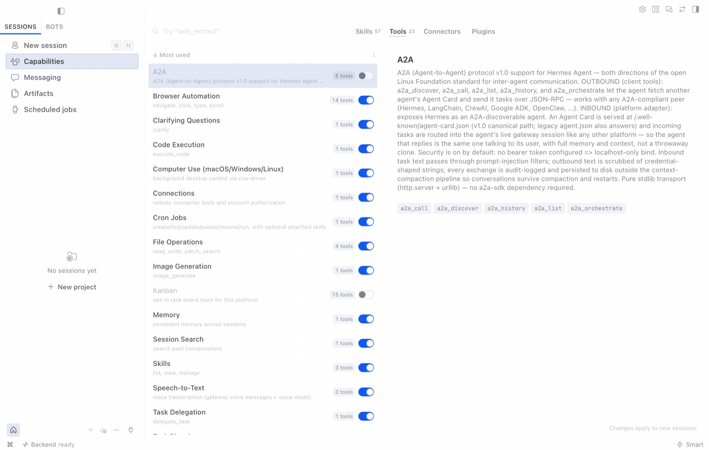
TerminalIn the terminal
hermes -p study-buddy tools # pick tools in a menu hermes -p study-buddy tools enable web todo clarify memory hermes -p study-buddy tools disable terminal file code_execution browser hermes -p study-buddy tools list # check
platform_toolsets: cli: [web, todo, clarify, memory] telegram: [web, todo, clarify, memory]

Part 9
Make it safe
A rule in SOUL.md is a request. A setting is a lock. Hermes enforces settings even when the agent is tricked.
| Risk | The lock | What it does |
|---|---|---|
| A web page tells your agent to run a bad command | approvals.mode: manual | Risky commands wait until you approve them |
| A command must never run | approvals.deny | Blocked every time, even if someone approves |
| The agent loops and uses up credits | agent.max_turns: 20 | A hard limit on steps per task |
| A key shows up in a tool result | security.redact_secrets | Keys become [REDACTED]. On by default: leave it on. |
| A phone number reaches the AI | privacy.redact_pii: true | Removes phone numbers and hides user IDs |
| A stranger finds your Telegram bot | TELEGRAM_ALLOWED_USERS | Only listed or paired people get answers |
| Too many tools | Turn tools off | A tool that’s off can’t be misused (Part 8) |
Hermes DesktopIn the app
- Settings › Safety › Approvals: Approval Mode decides when Hermes stops and asks you. Command Allowlist lists commands that are always OK.
- Messaging › Telegram: Allowed Telegram user IDs is the allowlist. “Without this, anyone can DM your bot.”
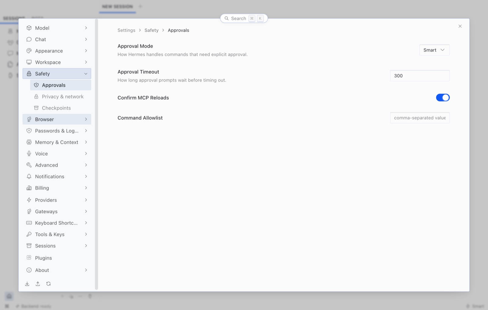
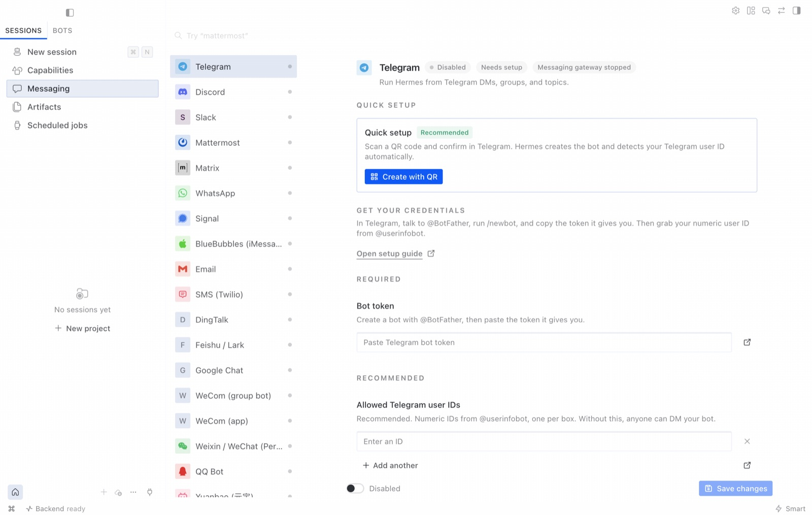
TerminalSafe settings to copy
agent: max_turns: 20 # step limit: every task stops approvals: mode: manual # risky commands wait for you deny: ["rm -rf *"] # never allowed, even if approved privacy: redact_pii: true # hide phone numbers from the AI security: redact_secrets: true # on by default: hide keys and passwords
TELEGRAM_ALLOWED_USERS=your-telegram-user-id # only you can use the botOr set one value at a time: hermes -p study-buddy config set agent.max_turns 20
/yolo and --yolo skip every approval. Don’t use them on an agent that has terminal, file, or browser tools.
In a terminal chat press Ctrl+C. To stop all scheduled jobs and new Telegram replies at once: hermes pause (undo with hermes resume).
Part 10
Memory and skills
Hermes gets better the more you use it: it remembers you, and it saves how-tos.
Memory: two small files
| File | What it holds |
|---|---|
MEMORY.md | The agent’s own notes: facts, habits, what worked (about 2,200 characters) |
USER.md | What it knows about you: preferences and style (about 1,375 characters) |
- Tell it: “Remember that I like short answers.”
- Type
/newwhen you finish a task. That’s when memory is saved and reloaded. - Read it any time:
cat ~/.hermes/memories/USER.md. Delete anything you don’t want it to keep.
Skills: saved how-tos
A skill is a SKILL.md file: when to use it, the steps, and how to check it worked. The agent loads it only when it’s needed.
hermes skills search study # find skills about a topic hermes skills inspect <name> # read it before you install hermes skills install <name> # add it hermes skills list # what you have
--- name: study-plan description: Turn a list of exams into a week-by-week study plan. version: 1.0.0 --- # Study plan ## When to Use The user lists exams or deadlines and asks for a plan. ## Procedure 1. Ask for each subject, its date, and free hours per day. 2. Put the hardest subject first, in short blocks. 3. Leave the day before each exam for review. ## Pitfalls - Don’t plan more hours than the user has. ## Verification Every exam has study blocks before its date.
A skill is instructions your agent will follow. Install skills only from sources you trust, and read them first with hermes skills inspect.
Hermes DesktopIn the app
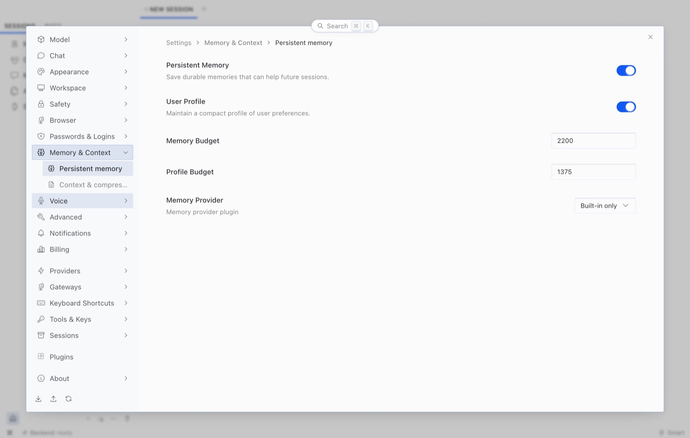
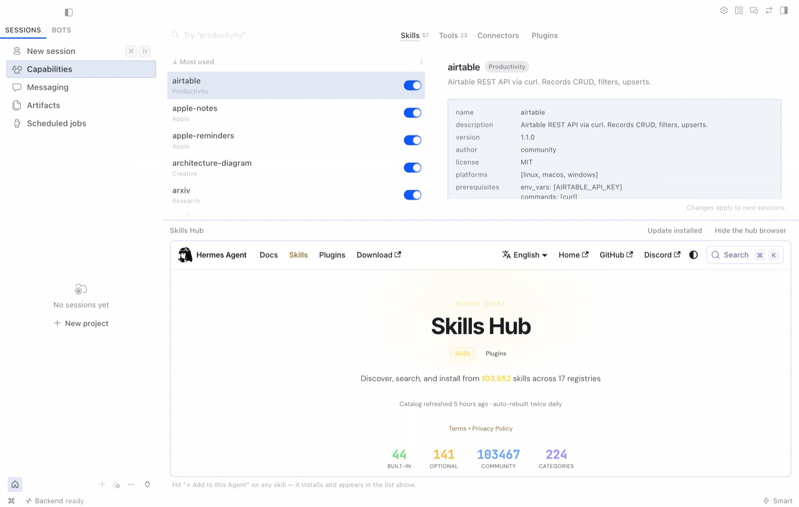
Part 11
Scheduled jobs
A scheduled job (a “cron job”) is an alarm clock for your agent. At the set time, Hermes gives it a task and sends the result where you want.
Reading a schedule
| Schedule | Means |
|---|---|
0 8 * * * | Every day at 8:00 |
30 7 * * 1-5 | Weekdays at 7:30 |
0 18 * * 0,6 | Weekends at 18:00 |
0 9 * * 1 | Mondays at 9:00 |
The five parts are: minute, hour, day of month, month, day of week. A * means “every”.
Hermes DesktopIn the app
- Open Scheduled jobs in the sidebar.
- Pick a blueprint, like Morning briefing, Weekly review, or Daily learning drip.
- Set the time and where to deliver it (this computer, or a chat like Telegram), then schedule it.
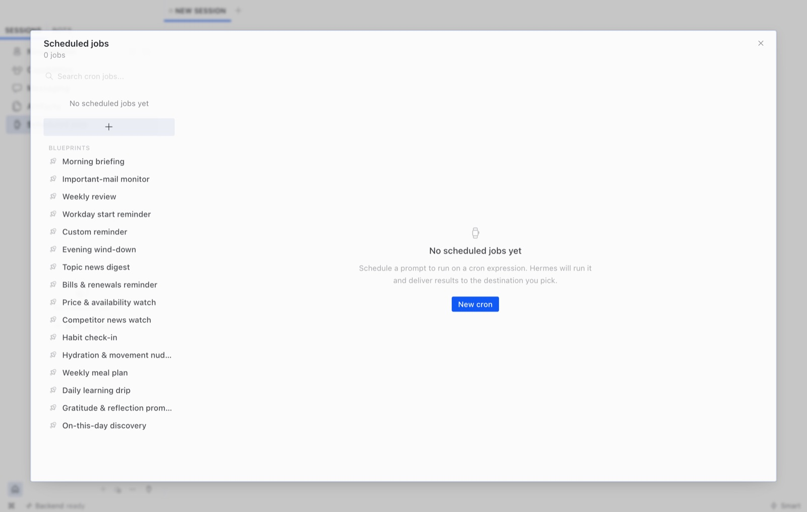
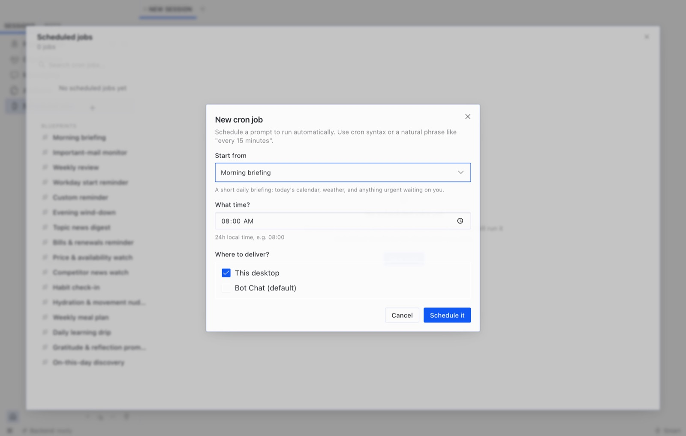
TerminalIn the terminal
hermes -p study-buddy cron create "0 8 * * *" \ "Write a short morning briefing: one study tip and one thing to try today." \ --name "Morning Briefing" --deliver local hermes -p study-buddy cron list # check it hermes -p study-buddy cron run <job_id> # try it now

hermes cron list: each job, its schedule, and when it runs next.Your computer must be on and awake, with Hermes running, at that time. Use --deliver telegram to get the result on your phone (Part 12).
Part 12
Put it on Telegram
Chat with your agent from your phone. Hermes still runs on your computer. The gateway carries messages between Telegram and your agent.
Hermes DesktopIn the app (easiest)
- Open Messaging › Telegram.
- Click Create with QR and scan the code with your phone (or open the link).
- Confirm in Telegram. Hermes creates the bot, finds your user ID for the allowlist, and saves everything.
- Check that your ID is in Allowed Telegram user IDs, then Save changes. Message your bot.
TerminalIn the terminal
- In Telegram, message @BotFather, send
/newbot, choose a name, and copy the token. - Run
hermes gateway setupand paste the token when it asks. It’s saved in.envasTELEGRAM_BOT_TOKEN. - Start the gateway:
hermes gateway installkeeps it running in the background.hermes gateway runruns it in this window. - Message your bot. It replies with an 8-character pairing code. Let yourself in:
hermes pairing approve telegram CODE - Check it:
hermes gateway status
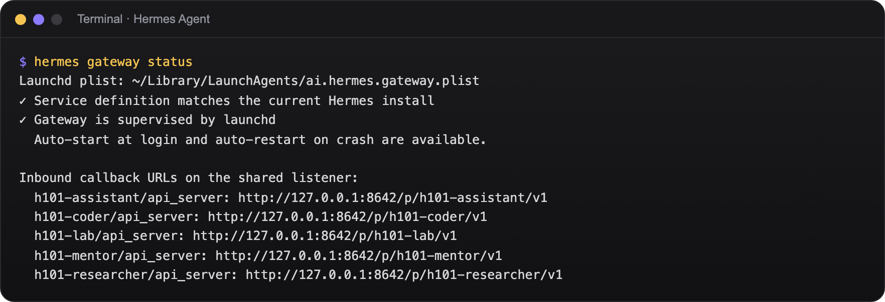
hermes gateway status: it’s running.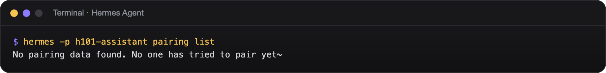
hermes pairing list: who is waiting to be let in.You don’t make a bot in class. Open the workshop’s bot from the Hermes on Telegram page, press Start, paste your pairing code there, and wait for a mentor to approve you.
Anyone with it controls your bot. If it leaks, open @BotFather and revoke it.
Part 13
Connect apps
Hermes can speak the same API as OpenAI, so other apps (like the workshop website) can use your agent. This part is optional.
Hermes DesktopIn the app
- Messaging › API server: set a long, random key, enable it, and Save changes.
- Settings › Gateways: connect the app to a Hermes on another computer (remote, Hermes Cloud, or over SSH).
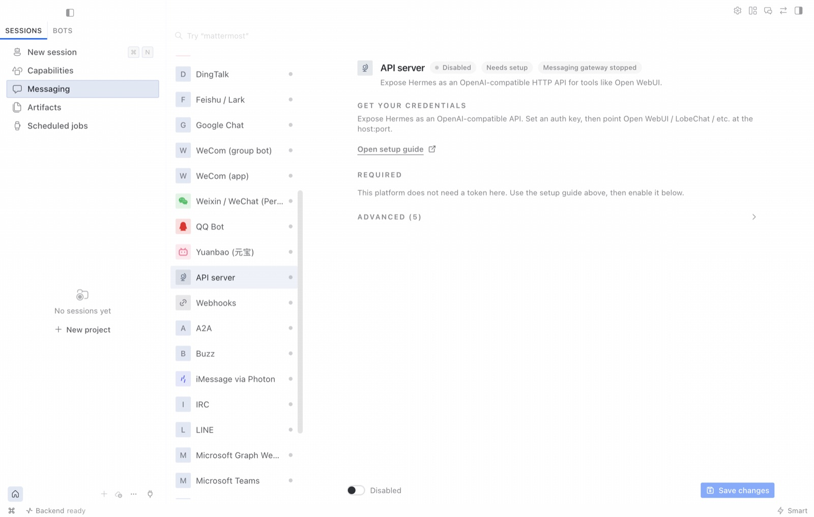
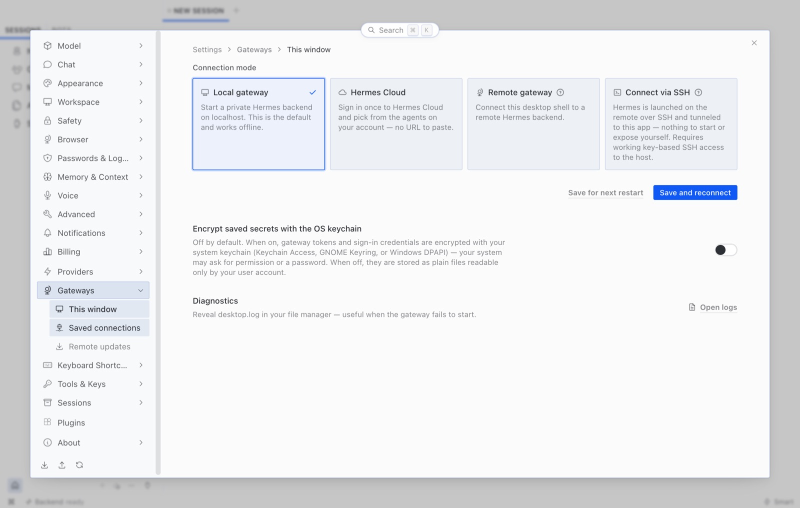
TerminalIn the terminal
- Add
API_SERVER_KEY=…(long and random) to the profile’s.env. - Start the gateway:
hermes -p study-buddy gateway start - Try it:
curl http://127.0.0.1:8642/p/study-buddy/v1/chat/completions \
-H "Authorization: Bearer $API_SERVER_KEY" \
-H "Content-Type: application/json" \
-d '{"model":"study-buddy","messages":[{"role":"user","content":"Hi!"}]}'The answer is in choices[0].message.content.
The API server only answers on your own computer (127.0.0.1). If you ever open it to the internet, protect it with the key and expose only what you need.
Part 14
Troubleshooting
Start with these three commands. They fix or explain most problems.
hermes doctor # checks your setup and says what's wrong hermes status # is everything running? hermes logs # what happened, and why
| Problem | Fix |
|---|---|
| “hermes: command not found” | Open a new terminal window. Still broken? Run source ~/.zshrc (Mac) or source ~/.bashrc (Linux), then check ls ~/.local/bin/hermes. |
| The Mac installer says “not supported on this Mac” | Your Mac has an Intel chip. The app is for Apple Silicon only. Try the terminal install (Part 3B); it isn’t officially supported, so it may not work. |
| API key not working | The key must match the provider (an OpenAI key won’t work on OpenRouter). Run hermes model and enter it again. Check for an old key in ~/.hermes/.env. |
| “Model not found” | Pick a model from the list: Settings › Model or hermes model. |
| Error 429, “rate limit”, or out of credits | Wait a minute and retry. Free models have daily limits. Switch to another model with /model. |
| The app shows an error card | It names what failed (model, connection, key, disk). Use its buttons: Retry, Switch provider, or Open logs. |
| The app stopped answering, but says Connected | Open the gateway menu in the status bar at the bottom and click Reconnect gateway. Or quit and reopen the app. |
| “Context length exceeded”, or it forgot the start of the chat | The chat got too long. Type /compress, or /new to start fresh. |
| “Command blocked” or it asks for approval | That’s the safety lock working. Read the command. /approve only if you understand it, otherwise /deny. |
| Telegram bot doesn’t reply | Run hermes gateway status; if it’s stopped, hermes gateway start. Are you paired or in the allowlist? Check hermes pairing list. Read ~/.hermes/logs/gateway.log. |
| A scheduled job didn’t run | Was the computer on and awake, with Hermes running? Check hermes cron list, then test with hermes cron run <job_id>. |
| Tool changes don’t show up | Tool changes apply to new chats. Type /new. |
| Answers are slow | Free and local models can be slow. Give one clear task at a time, or pick a faster model. |
In the lab, ask a mentor. At home, see the official Hermes docs. When you ask for help, share the error text, never your .env or keys.
Part 15
Command cheat sheet
Add -p <profile> after hermes to run any of these for one agent.
| Command | What it does |
|---|---|
| Set up | |
hermes setup | The setup wizard |
hermes model | Pick the provider and model |
hermes doctor | Check that everything works |
hermes update | Update Hermes |
hermes desktop | Open the desktop app |
| Chat | |
hermes | Start a chat |
hermes --continue | Continue your last chat |
hermes -z "…" | One question, one answer (skips approvals) |
hermes sessions list | Your past chats |
| Agents | |
hermes profile create <name> | Make a new agent |
hermes profile list | See all your agents |
hermes -p <name> | Chat with one agent |
| Tools and settings | |
hermes tools | Turn tools on and off in a menu |
hermes tools list | Which tools are on |
hermes config set <key> <value> | Change one setting |
hermes config get <key> | Read one setting |
| Memory and skills | |
hermes skills search <topic> | Find skills |
hermes skills install <name> | Add a skill |
hermes skills list | Your skills |
| Scheduled jobs | |
hermes cron create "<when>" "<task>" | Add a job (add --name, --deliver) |
hermes cron list | Your jobs and their next run |
hermes cron run <job_id> | Run a job now |
| Telegram and apps | |
hermes gateway setup | Add a bot token |
hermes gateway start · status | Start it, or check it |
hermes pairing approve telegram <CODE> | Let someone talk to your bot |
| Help and safety | |
hermes status · hermes logs | What’s running, and what happened |
hermes insights | Your usage: chats, tools, tokens |
hermes pause · hermes resume | Emergency stop for jobs and bots, and undo |
Part 16
Glossary
- Agent
- An AI that can act with tools, in a loop, until a job is done.
- Model
- The AI “brain” that reads and writes text. Made by a provider.
- Provider
- The company or program that runs the model: Nous Portal, OpenRouter, OpenAI, Ollama…
- API key
- A secret password that lets Hermes use a provider. Saved in
.env. - Token
- A small piece of text (about ¾ of a word). Providers count and charge by tokens.
- Context window
- How much text the model can keep in mind at once. Long chats can overflow it.
- Tool / toolset
- An action the agent can take (search, read a file). Toolsets are groups of tools.
- Profile
- One separate agent with its own settings, SOUL.md, memory, and keys.
- SOUL.md
- The file that says who the agent is: job, rules, tone.
- config.yaml
- The settings file: model, tools, safety.
- Memory
- What the agent remembers between chats (
MEMORY.md,USER.md). - Skill
- A saved how-to (
SKILL.md) the agent loads when needed. - Cron job
- A task that runs on a schedule.
- Gateway
- The bridge between Hermes and Telegram or other apps.
- Pairing / allowlist
- How you decide who may talk to your bot.
- Approval
- Hermes stops and asks you before a risky command runs.
- Prompt injection
- Hidden instructions in a web page or file that try to trick the agent.
- Hallucination
- When a model makes something up and says it as if it were true.
- Least privilege
- Give an agent only the tools and access its job needs.
Part 17
Rules for using agents
An agent works for you, and you are responsible for what it does.
.env. If one leaks, revoke it on the provider’s site right away.max_turns, and check hermes insights./deny, or hermes pause.Keep learning
- The Hermes Agent 101 course: 13 hands-on steps, with a real agent to test your SOUL.md
- Hermes Agent official site and docs